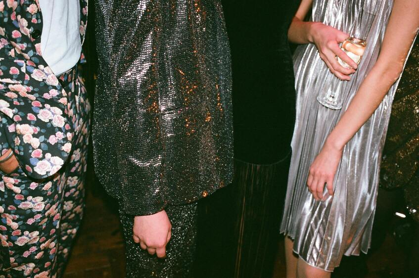

Jul 1, 2023 • 2 min read
Tom Ford, the fashion brand acquired by the Estée Lauder Companies last year, is making a significant shift by presenting its highly anticipated spring/summer 2024 women's collection in Milan during Milano Moda Donna.
This marks a new chapter for the label, with the debut of their new creative director, Peter Hawkings, who brings extensive experience after working alongside Mr Ford for 25 years.
The brand's new ownership also appointed Guillaume Jesel as president and CEO. Following the ownership change, Tom Ford bid farewell to the fashion world and presented a video showcasing the brand's archive for his last collection. Market estimates suggest Mr Ford earned around 1.1 billion dollars from the sale of his fashion house.
Jul 4, 2023 • 2 min read

The Berlin Fashion Week stands out as a distinctive event that embodies the creative energy and diversity of the German metropolis. From July 10th to 13th, this international showcase will celebrate creativity, freedom, and inclusion in the fashion industry. Berlin's subcultural movements, progressive fashion trends, and transformative spirit are reflected in the event's emphasis on important topics like sustainability, inclusion, and innovation. Setting itself apart from traditional fashion weeks in Milan, Paris, London, and New York, Berlin Fashion Week establishes a progressive and revolutionary path. By bringing together designers, press, buyers, and creatives in a physical gathering, the event promotes exchange, inspiration, and visibility for established professionals and emerging changemakers alike.
Talent promotion and interdisciplinary collaboration take center stage during Berlin Fashion Week. 'Berlin Contemporary,' a concept competition organized by the Fashion Council Germany, showcases the work of 18 selected designers from Berlin and across the country. Established labels like ODEEH, Esther Perbandt, and RIANNA + NINA, as well as emerging talents like Acceptance Letter Studio and Namilia, will present their collections. The Berlin Salon exhibition at the Kronprinzenpalais serves as a platform for 44 talents from design, fashion, photography, and art, fostering interdisciplinary synergy within the fashion industry.
Another notable event platform, newEST, hosts fashion shows by Berlin Contemporary winners in collaboration with the National Museums in Berlin. The shows take place in architectural and cultural landmarks such as the Alte Nationalgalerie (Old National Gallery) and the James Simon Gallery, seamlessly blending architecture, art, and fashion. The Berlin Senate Department for Economic Affairs, Energy and Industry recognizes the potential of promoting Berlin Fashion Week as a stage for visionary designers, aiming to set international trends and position Berlin as a hub for fresh, bold, and forward-looking fashion.
In addition to fashion shows and exhibitions, Berlin Fashion Week offers networking opportunities and an extensive content program on the latest trends in fashion, business, sustainability, tech, and beauty. The W.E4.FASHION DAY brings together four designers to showcase their collections at the Verti Music Hall. The Studio2Retail project, implemented by the Fashion Council Germany in cooperation with the Berlin Senate Department for Economic Affairs, Energy and Industry, brings the Fashion Week atmosphere to various locations across the city, with fashion shows, events, and pop-ups enticing visitors throughout Berlin.
With its focus on diversity, sustainability, and innovation, Berlin Fashion Week in July 2023 promises to be a unique event that showcases the city's creative power and capacity for future-oriented fashion. Berlin positions itself as a leading location in the industry, inviting designers, buyers, press, and creatives from around the world to participate in this extraordinary event that sets the stage for the future of fashion.
"Get ready to embrace the latest fashion trend that's taking the world by storm. Say hello to 'neo-vintage' fashion, where classic elements meet contemporary styling. This trend brings together nostalgic silhouettes, retro prints, and vintage-inspired details with a modern twist, creating a perfect fusion of old and new. From statement collar blouses to pleated midi skirts and chunky platform sandals, the neo-vintage trend allows you to channel your inner fashion icon while staying on-trend. So, get ready to mix and match vintage pieces with current wardrobe favorites for a look that's effortlessly chic and uniquely yours. #NeoVintageFashion #RetroRevival #FashionTrends" See More
"Step into summer with the 'effortless resort' fashion trend. Embrace relaxed silhouettes, lightweight fabrics, and breezy designs that exude vacation vibes. Think flowy maxi dresses, wide-leg linen pants, and oversized straw hats. Whether you're lounging by the pool or strolling along the beach, this trend brings together comfort and style in a perfect blend. Pair your resort-inspired outfits with strappy sandals and colorful accessories for a fresh and laid-back summer look. Get ready to escape to a world of carefree elegance with the effortless resort fashion trend. #ResortFashion #SummerStyle #VacationVibes" See More
"Absolutely loving the neo-vintage trend! It's the perfect combination of classic and contemporary style. Can't wait to experiment with mixing retro prints and modern pieces for a unique and fashion-forward look. #NeoVintageFashion #FashionTrends" See More
"The effortless resort trend is giving me major vacation vibes! I'm all for comfortable and breezy silhouettes during the summer months. Excited to rock flowy maxi dresses and wide-leg pants while soaking up the sun. Bring on the relaxation and style! #ResortFashion #SummerStyle" See More